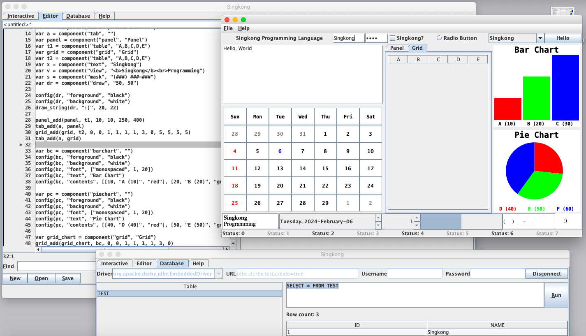

Dr. Noprianto
Singkong Programming Language: case-insensitive, dynamically typed, procedural, and interpreted programming language that runs on Java Virtual Machine (Java 5.0 or later). It has numbers, booleans, strings, arrays, hash maps, dates, first-class functions, built-in functions, GUI components, database connections, and other features. Singkong program can call Java methods and Singkong interpreter can be embedded and integrated into another applications. Singkong interpreter is distributed as single jar file. It comes with simple GUI editor/interactive evaluator/database tool and can be run on graphical or text user interfaces.
Download (4.3 MB, version 7.1, 2022-May-22): Singkong.jar, Singkong.jar.md5 (checksum), Singkong.txt (documentation, also included in Singkong.jar).
Singkong book in Bahasa Indonesia (284 pages): singkong.pdf
Modules and examples: monkey.singkong, rect_array_util.singkong (bundled), csv.singkong (bundled), set_util.singkong (bundled), db_util.singkong (bundled), perkedel.singkong, components.singkong, paint.singkong (screenshot), greetings.singkong, layout.singkong, info.singkong, event.singkong, printer.singkong, editor.singkong, timer.singkong, database_simple.singkong, database.singkong, sort.singkong, draw.singkong, util.singkong (bundled), ui_util.singkong (bundled), medical.singkong.
{kind=link}
Module (Java) examples: HelloWorld.class, HelloWorldArray.class, HelloWorldArrayArray.class, HelloWorldEval.class, Dialog.class.
Singkong web application (CGI) demo: www.singkong.dev
Singkong is based on Monkey.java and inspired by Monkey Programming Language. Monkey.java is based on monkey.py. There is also a Monkey interpreter written in Singkong (monkey.singkong). Monkey.java, monkey.py, and monkey.singkong are open source software.
Singkong requires only Java Runtime Environment (Java 5.0 or later) and has been tested on the following systems.
| macOS | 11, 10.15, 10.14, Mac OS X 10.4 |
| Windows | 10, 7, XP, 2000, 98 |
| Linux | Ubuntu (20.04, 18.04, 16.04, 4.10), Raspberry Pi OS, Red Hat Linux 7.3, Debian 10 on Android |
| Chrome OS | 101 (Linux development environment) |
| Solaris | 11.4 |
| FreeBSD | 13.0, 12.1 |
| OpenBSD | 7.0, 6.6 |
| NetBSD | 9.2, 9.0 |
Singkong and Java 8 bundle: if you are using Windows and Java is not installed, singkong-java8-bundle.exe might be used to run Singkong (portable/standalone, no installation, no admin privileges required, for Windows 7 or later). Files used in building this bundle: singkong-java8-bundle.SED, singkong.c, singkong.exe.
| Interactive evaluator |

|
| Editor |

|
| Database tool |

|
| Help |

|
| macOS 10.15 |  |
| Mac OS X 10.4 | |
| Windows 10 | |
| Windows 7 | |
| Windows XP | |
| Windows 2000 | |
| Windows 98 | |
| Ubuntu 16.04 | |
| Ubuntu 4.10 | |
| Red Hat Linux 7.3 | |
| Chrome OS 101 | |
| Solaris 11.4 | |
| FreeBSD 13.0 | |
| OpenBSD 7.0 | |
| NetBSD 9.2 | |
| Debian 10 on Android |